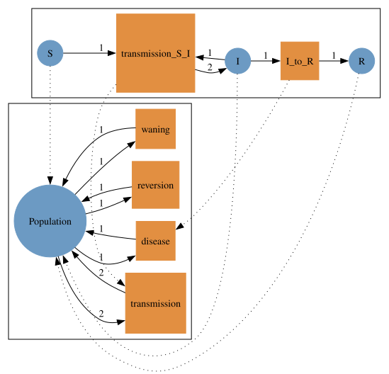
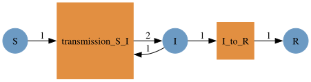
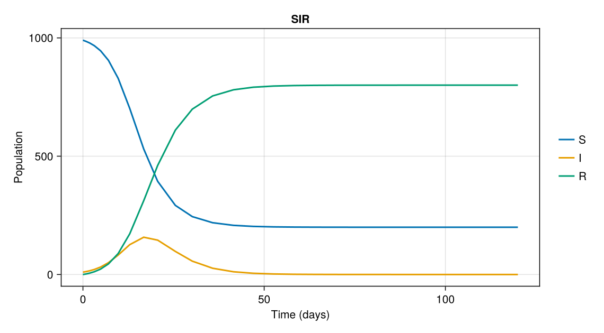
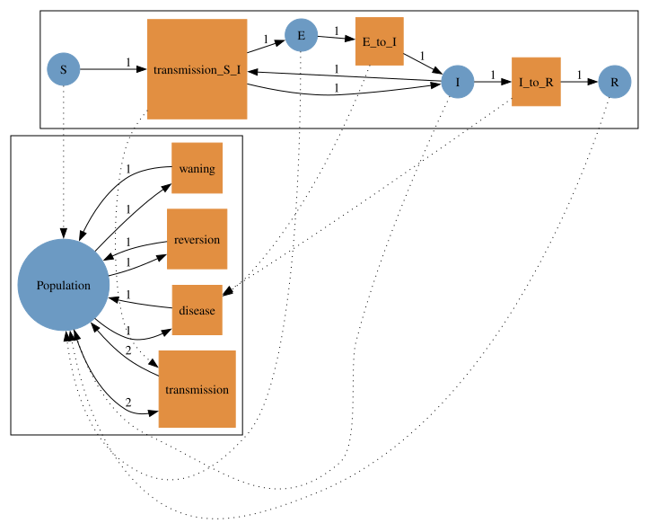
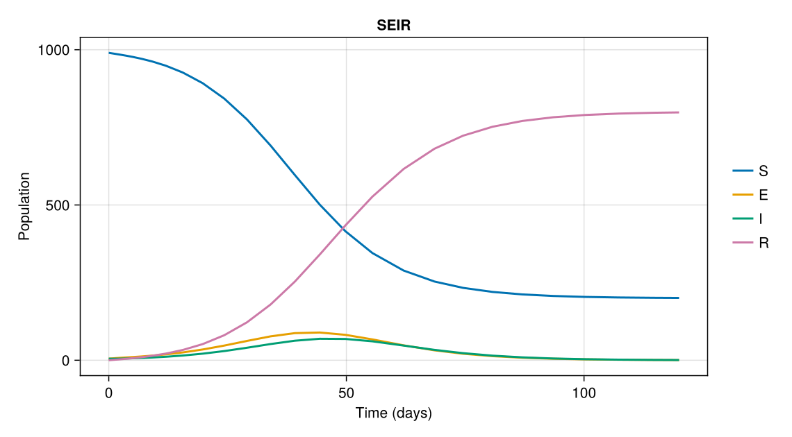
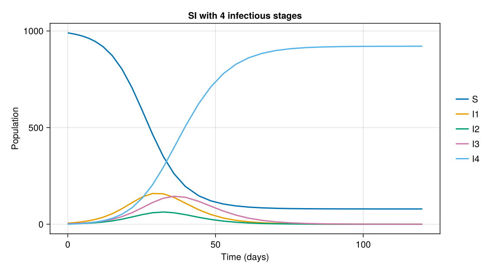
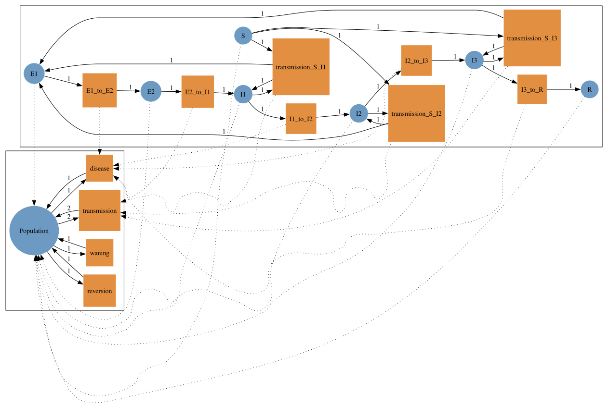
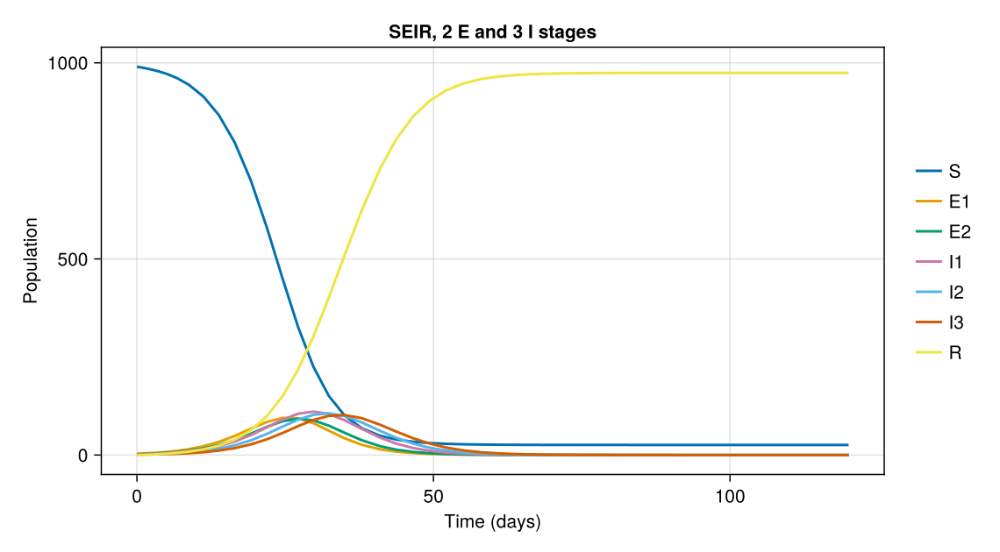
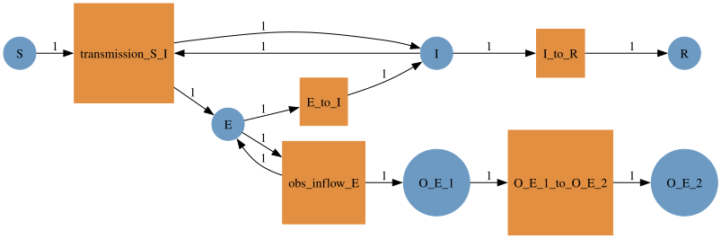
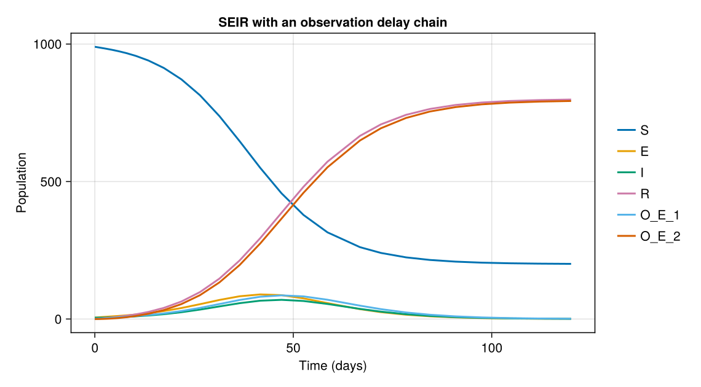

Compartmental models¶
This example builds compartmental models with AlgebraicEpiMech and solves them as ODEs.
A model is a Petri net typed over an epidemiological type system: species are compartments, transitions are the flows between them, and the typing is what lets models be composed later (see Stratified models).
Drawing the nets with to_graphviz needs the Graphviz dot executable on the PATH.
using AlgebraicEpiMech
using AlgebraicPetri
using Catlab
using CairoMakie
using LabelledArrays
using OrdinaryDiffEqTsit5
using SymbolicIndexingInterface: SymbolCache
A simple SIR model¶
create_model pairs a typing with a model template and returns a typed Petri net, a map \(P \to P_{\text{type}}\) from the model into the type system.
For one model on its own the typing is redundant, but it is what makes composition with other models over the same typing well-defined.

The domain of the typed net is the model itself.

Circles are species (the ODE state) and boxes are transitions (one rate parameter each).
Arrow labels are stoichiometric coefficients.
Read as mass-action kinetics, each transition fires at its rate times the product of its inputs, and moves individuals from inputs to outputs.
Transmission, for example, consumes one S and one I and produces two I, so it fires at transmission_S_I * S * I and changes S by -1 and I by +1.
Transition names are unique and descriptive: a single-input transition is input_to_output (I_to_R), and a multi-input transition is box_input1_input2 (transmission_S_I).
That makes parameter assignment unambiguous.
vectorfield_flat turns the net into an in-place ODE right-hand side f!(du, u, p, t) over labelled state and parameter vectors.
Naming the state in the ODEFunction lets the solution be indexed and plotted by compartment.
function solve_net(pn, u0, p, tspan)
f = ODEFunction(vectorfield_flat(pn); sys = SymbolCache(collect(keys(u0))))
return solve(ODEProblem(f, u0, tspan, p), Tsit5())
end
function solution_figure(sol, names; title, ylabel = "Population")
fig = Figure(size = (760, 420))
ax = Axis(fig[1, 1]; xlabel = "Time (days)", ylabel, title)
for name in names
lines!(ax, sol.t, sol[name]; label = string(name), linewidth = 2)
end
Legend(fig[1, 2], ax; framevisible = false)
return fig
end
N = 1000.0
u0 = LVector(S = N - 10.0, I = 10.0, R = 0.0)
p = LVector(transmission_S_I = 0.5 / N, I_to_R = 0.25)
tspan = (0.0, 120.0)
sol = solve_net(sir_pn, u0, p, tspan)
solution_figure(sol, keys(u0); title = "SIR")

SEIR¶

u0_seir = LVector(S = N - 10.0, E = 5.0, I = 5.0, R = 0.0)
p_seir = LVector(transmission_S_I = 0.5 / N, E_to_I = 0.2, I_to_R = 0.25)
sol_seir = solve_net(seir_pn, u0_seir, p_seir, tspan)
solution_figure(sol_seir, keys(u0_seir); title = "SEIR")

Multi-stage compartments¶
Splitting a compartment into sequential stages gives phase-type (for equal rates, Erlang) dwell times instead of exponential ones. Here the infectious period has four stages, each with its own transmission rate, which gives a time-since-infection infectiousness profile.
si_multi_pn = dom(create_model(typing, SI(number_I_stages = 4)))
(species = snames(si_multi_pn), transitions = tnames(si_multi_pn))
(species = [:I1, :I2, :I3, :I4, :S], transitions = [:I1_to_I2, :I2_to_I3, :I3_to_I4, :transmission_S_I1, :transmission_S_I2, :transmission_S_I3, :transmission_S_I4])
u0_si = LVector(S = N - 10.0, I1 = 5.0, I2 = 3.0, I3 = 2.0, I4 = 0.0)
p_si = LVector(
transmission_S_I1 = 0.1 / N, transmission_S_I2 = 0.5 / N,
transmission_S_I3 = 0.25 / N, transmission_S_I4 = 0.0,
I1_to_I2 = 0.2, I2_to_I3 = 0.5, I3_to_I4 = 0.2,
)
sol_si = solve_net(si_multi_pn, u0_si, p_si, tspan)
solution_figure(sol_si, keys(u0_si); title = "SI with 4 infectious stages")

Stages combine freely: an SEIR with two exposed and three infectious stages has eight transitions, each with a unique name.
seir_multi_typed = create_model(typing, SEIR(number_E_stages = 2, number_I_stages = 3))
to_graphviz(seir_multi_typed)

u0_sm = LVector(S = N - 10.0, E1 = 3.0, E2 = 2.0, I1 = 2.0, I2 = 2.0, I3 = 1.0, R = 0.0)
p_sm = LVector(
transmission_S_I1 = 0.5 / N, transmission_S_I2 = 0.5 / N, transmission_S_I3 = 0.5 / N,
E1_to_E2 = 0.5, E2_to_I1 = 0.5, I1_to_I2 = 0.4, I2_to_I3 = 0.4, I3_to_R = 0.4,
)
sol_sm = solve_net(dom(seir_multi_typed), u0_sm, p_sm, tspan)
solution_figure(sol_sm, keys(u0_sm); title = "SEIR, 2 E and 3 I stages")

Observation delay chains¶
Surveillance sees a delayed version of the epidemic.
attach_observation adds an observation delay chain to a built net by pushout:
AtCompartment(:X)samples a compartment: a catalytic transitionX → X + O_X_1fires at a rate times the occupancy ofXand leavesXunchanged (prevalence-type signals such as test positivity).AtEvent(:transition)records a transition's flow instead (incidence-type signals such as emergency-department visits).
The chain O_X_1 → O_X_2 → … is an Erlang delay; the last stage accumulates.
Because the chain is part of the net, attaching it to a stratified model gives each stratum its own chain.
seir_obs_pn = attach_observation(dom(create_model(typing, SEIR())), AtCompartment(:E); n_stages = 2)
to_graphviz(seir_obs_pn)

u0_obs = LVector(S = N - 10.0, E = 5.0, I = 5.0, R = 0.0, O_E_1 = 0.0, O_E_2 = 0.0)
p_obs = LVector(transmission_S_I = 0.5 / N, E_to_I = 0.2, I_to_R = 0.25, obs_inflow_E = 0.2, O_E_1_to_O_E_2 = 0.2)
sol_obs = solve_net(seir_obs_pn, u0_obs, p_obs, tspan)
solution_figure(sol_obs, keys(u0_obs); title = "SEIR with an observation delay chain")
